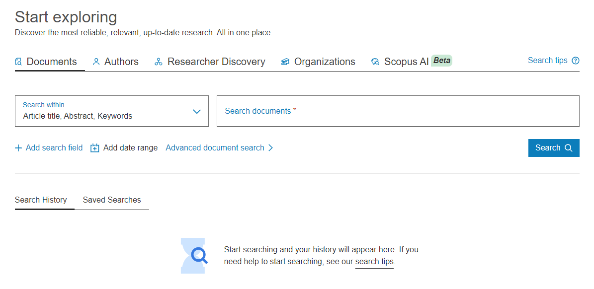
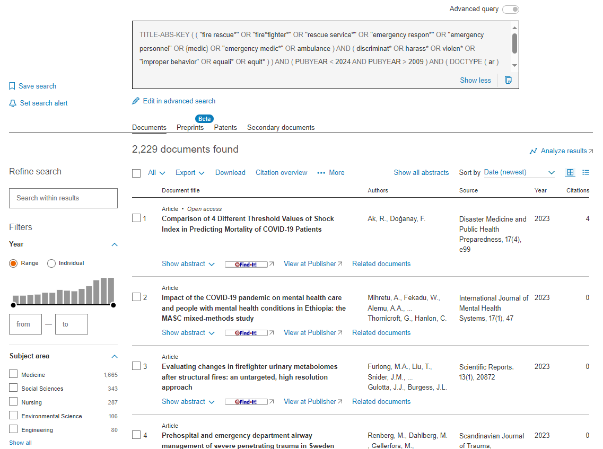
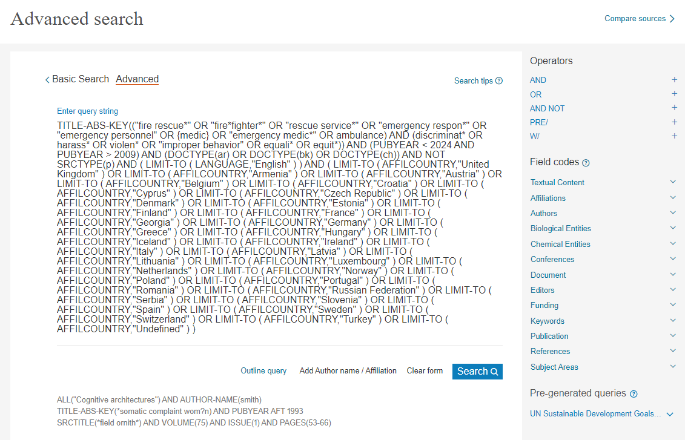
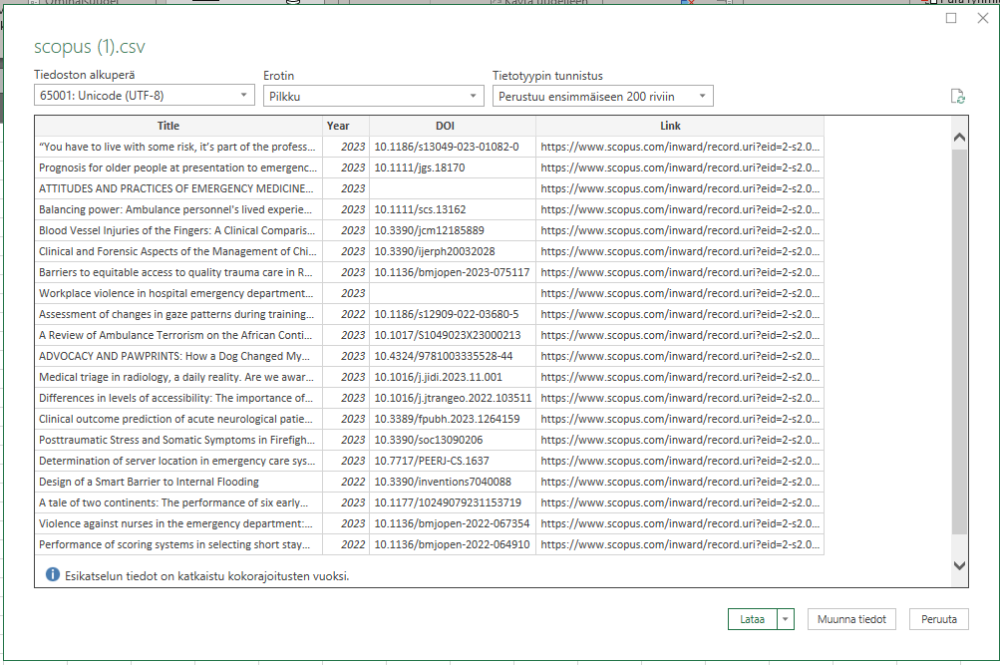

11 Scopus
Osoite: https://www.scopus.com/home.uri
Sisältö: Yleinen tutkimuskirjallisuus
Saatavuus: Maksumuurin takana (Polamk:illa ei pääsyä)
Aineistotyyppi: Vertaisarvioitu tutkimusraportti, harmaa kirjallisuus
Alusta: Itse kehitetty
Huomioita: Scopuksessa haetaan vain vertaisarvioituja tutkimusraportteja.

Kirjautuessasi Scopukseen näet ensin perushaun näkymän (Kuva 11.1). Perushaku on varsin toimiva, mutta voit myös halutessasi vaihtaa erityisen haun näkymään, josta löytyy hieman helpommin kaikki mahdolliset rajaukset ja hakulausekkeeseen liittyvät toiminnot.
11.1 Hakulausekkeen muokkaaminen
Scopuksessa määritellään useimmat rajaukset hakulausekkeessa. Hakukone tottelee seuraavia sääntöjä hakulausekkeen kirjoittamisessa:
ORjaANDtoimivat kuten yleisesti.NOTpitää ilmaista muodossaAND NOT.- Fraasihaku ilmaistaan lainausmerkeillä
""ja merkkitarkka haku (jokaisen merkin tulee vastata tarkasti) ilmaistaan aaltosuluilla{}.- Lainausmerkit eivät takaa merkkitarkkaa hakutulosta, vaan hakevat vain löysästi lauseena. Scopus laajentaa haut koskemaan monikkomuotoja ja vaihtoehtoisia kirjoitusmuotoja automaattisesti, eli
"heart attack"hakee myösheart attacks. Hakuanestesiahakee myösanaesthesia. - Viivat
-ja pisteet.tulkitaan löysänä hakuna:heart-attackjaheart.attackovat samat kuin"heart attack". - Villikortit toimivat fraasihaussa mutta eivät aaltosuluissa.
- Lainausmerkit eivät takaa merkkitarkkaa hakutulosta, vaan hakevat vain löysästi lauseena. Scopus laajentaa haut koskemaan monikkomuotoja ja vaihtoehtoisia kirjoitusmuotoja automaattisesti, eli
- Boolelaisissa merkeissä on oma tulkintajärjestyksensä: ensin
OR, sittenAND, sittenAND NOT. Esimerkiksimouse AND NOT cat OR dogtulkitaan(mouse) AND NOT (cat OR dog). Tätä voi kuitenkin muokata suluilla(), mitä suositellaan. - Hakuja voi kohdentaa tiettyihin kohtiin käyttämällä kenttäkoodeja. Kenttäkoodit ilmaistaan aina muodossa
koodi(haku), eli ensin koodi, sitten sulut heti koodin perään (ei välilyöntiä), ja sulkujen sisälle hakulauseke. Koodeja löytyy yli 60 kappaletta, joista tärkeimmät ovat:ALL: Hakee kaikesta mahdollisesta tekstistä.TITLE-ABS-KEY: Hakee otsikosta, tiivistelmästä ja avainsanoista (mutta ei muusta tekstistä). Jokaisen voi myös määrittää erikseen,TITLE,ABSja/taiKEY.INDEX: Määrittelee, mistä tietokannasta haetaan tietoja. Voidaan myös yhdistääAND NOT-sanaan, jolloin jätetään tietty tietokanta pois.PUBYEAR: Määrittelee julkaisuvuoden. Ottaa erillisavainsanatBEF(ennen),AFT(jälkeen),IS(tarkka vuosi). Yhdistelemällä näitä ja boolelaisia avainsanoja voidaan rakentaa vuosiväli:PUBYEAR BEF 2024 AND PUBYEAR AFT 2009hakee julkaisuja aikavälistä 2010-2023. [TÄMÄ PITÄÄ VIELÄ TARKISTAA, ETTÄ HAKU ON EKSKLUSIIVINEN EIKÄ INKLUSIIVINEN].DOCTYPE: Määrittelee dokumentin muodon. Vaihtoehdot ovat: artikkeliar, abstraktiraporttiab, kirjabk, kirjalukuch, kaupallinen artikkelibz, konferenssipapericp, konferenssi-reviewcr, datajulkaisudp, päätoimitused, korjauser, kirjele, huomautusno, tiedotuspr, raporttirp, poistettutb, review-artikkelire, lyhyt katsaussh. Käytämme pääsääntöisesti artikkelia, kirjaa ja kirjalukua.SRCTYPE: Määrittelee julkaisumuodon. Vaihtoehdot ovat: aikakauslehtij, kirjab, kirjasarjaktai konferenssijulkaisup. Tällä voi varmistaa ettei konferenssijulkaisut tule mukaan (AND NOT SRCTYPE(p)).
Esimerkkinä olen suorittanut seuraavan haun:
TITLE-ABS-KEY(("fire rescue*" OR "fire*fighter*" OR "rescue service*" OR "emergency respon*" OR "emergency personnel" OR {medic} OR "emergency medic*" OR ambulance) AND (discriminat* OR harass* OR violen* OR "improper behavior" OR equali* OR equit*)) AND (PUBYEAR BEF 2024 AND PUBYEAR AFT 2009) AND (DOCTYPE(ar) OR DOCTYPE(bk) OR DOCTYPE(ch)) AND NOT SRCTYPE(p)
- Hakusanat haetaan otsikosta, tiivistelmästä ja avainsanoista
TITLE-ABS-KEY-sanalla. - Kaikki fraasit ovat ympäröitynä lainausmerkeillä, esim.
"fire rescue*". - Sana medic on ympäröity aaltosuluilla, ettei tulisi mukaan yleisiä lääketieteellisiä tuloksia
{medic}. - Aikarajaus on määritelty lauseella
(PUBYEAR BEF 2024 AND PUBYEAR AFT 2009). - Dokumenttityypit ovat määritelty lauseella
(DOCTYPE(ar) OR DOCTYPE(bk) OR DOCTYPE(ch). - Konferenssijulkaisut ovat rajattuna pois lauseella
AND NOT SRCTYPE(p).
Tuloksia on kuitenkin tässä vaiheessa liikaa (Kuva 11.2), joten teen vielä manuaalisia rajauksia.

Vasemmalla puolella on rajauspalkki, johon voi manuaalisesti tehdä lisärajauksia monessa eri kategoriassa. Rajaukset voi tehdä positiivisena (“ota mukaan vain nämä”, Limit to-nappi) tai negatiivisena (“ota mukaan kaikki paitsi nämä”, Exclude-nappi), riippuen siitä, mikä on helpompi.
Huomaa, että Scopus toteuttaa haun uudestaan joka kerran, kun rajaat. Varsinkin maantieteellinen rajaus voi kestää kauan, koska rajausehtoja on useita.
Rajauspalkista asetan seuraavat asetukset:
- Kieli rajataan englanniksi (tämän voi tehdä myös hakulausekefraasilla
LANGUAGE(en)). - Alueet rajataan eurooppalaisiin maihin. Otan myös mukaan kategorian
undefined, koska siellä voi olla eurooppalaista tutkimusta jota Scopus ei jostain syystä ole kategorisoinut maantieteellisesti.
Kun rajaukset tehdään, Scopus syöttää ne valmiiksi hakulausekkeeseen. Näin voidaan toteuttaa sama haku uudelleen käyttämällä samaa hakulauseketta.
Voit tarkastella halutessasi koko hakulauseketta painamalla hakukentän alla olevaa Edit in advanced search-nappia:

11.2 Tulosten lataaminen
Kun olet valmis haun kanssa, voit ladata tulokset omalle koneellesi:
Hakutulosten yläpalkissa, valitse
All > Select allPaina
Export > CSVPoista kaikki täpät ja valitse vain
Document title,YearsekäDOIPaina
Export
Latauksessa kestää pieni hetki, mutta lopussa saat ladattuihin tiedostoihisi scopus.csv-nimisen tiedoston.
Avaa tyhjä Excel-taulukko. Valitse
Tiedot > Nouda tiedot > Tiedostosta > Tekstistä/CSV:stäHae esille ladattu CSV-tiedosto ja paina
OK.Jos kaikki meni oikein, näet esikatselunäkymän joka näyttää taulukkotiedostolta:

Paina
Lataa.Poista joko
Link- taiDOI-sarake. Molemmat antavat linkin artikkelin verkkosijaintiin;Linkosoittaa Scopuksen omaan metadatakirjaukseen, kun taasDOItulee ohjaamaan artikkelin alkuperäiseen sijaintiin.
Voit nyt valita kaikki tulokset (vie osoitin soluun A1 ja paina Ctrl + oikea valitaksesi seuraavat sarakkeet, ja sitten Ctrl + alas valitaksesi kaikki rivit) ja kopioida ne suoraan tulostaulukkoosi.